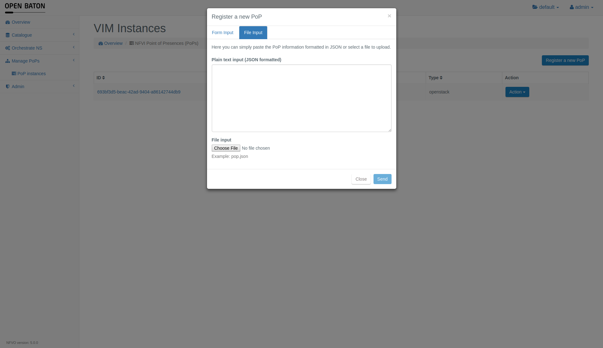
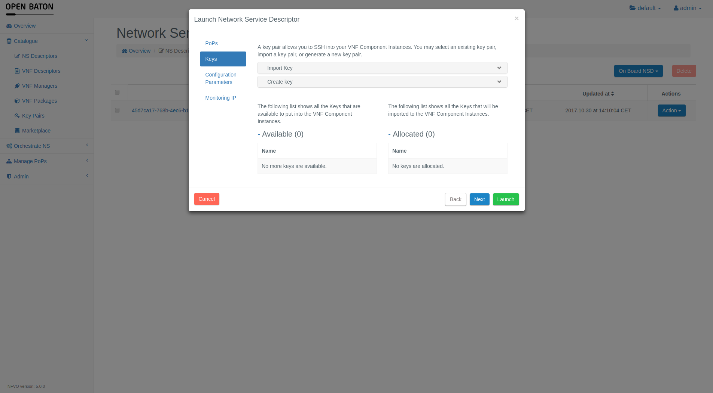
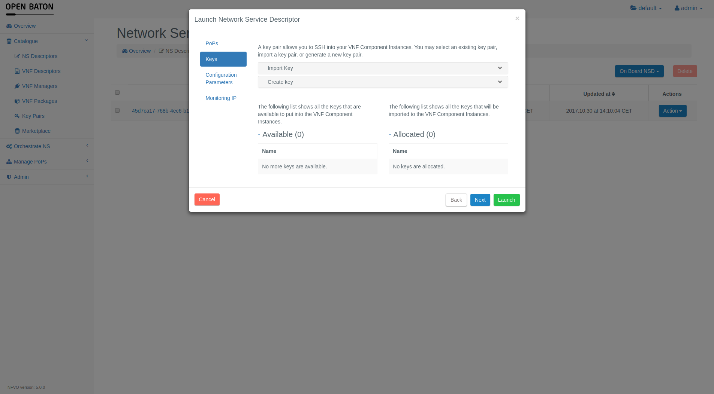
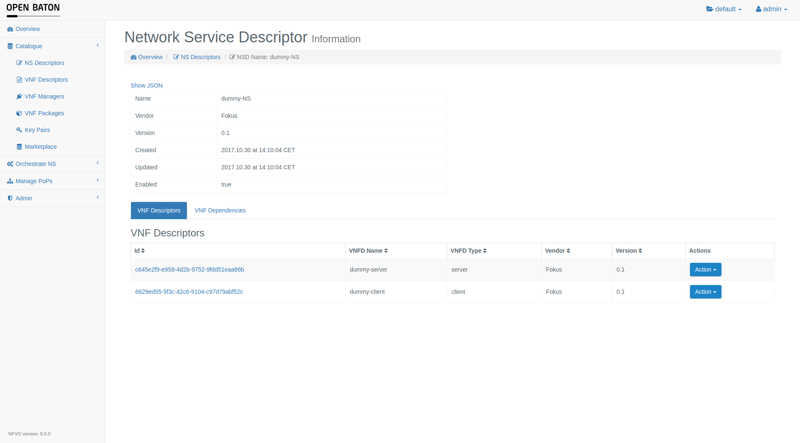

OpenBaton Dashboard
The Dashboard of OpenBaton helps you managing the lifecycle of different objects like Vim Instaces, Network Service Descriptors/Records and Virtual Network Function Descriptors/Records in the OpenBaton environment.
Login
The first page that you will see after typing http://url-to-nfvo:8080 or https://url-to-nfvo:8443 (depends whether SSL is enabled or not) into your browser is the following login form.

The default user is called admin and has the password openbaton.
Overview
The index page shows an overview of the state of the NFVO
- Number of Network Service Records
- Number of Virtual Network Functions
- Number of Network Service Descriptors
- Number of SSH Keys
It also shows the summary of the available resources, like floating ips, instances, RAM and CPU cores. The data is collected from the available PoPs if possible and then the summary is displayed. Test POPs do not grant any resources. The quota information is backed up in cache to avoid unnecessary traffic. You can refresh the data by going into the drop down menu (upper right corner) and choosing refresh quota option. You can now also see the NFVO version on the header panel.

Security
The NFVO uses projects and users with assigned roles so that multiple selected users can work in the same project environment.
The parts of the GUI to manage users and projects are marked red in the following screenshot.

In the upper right corner you can see the current project in which you are working next to the folder label.
Click on it to switch to other projects you have access to.
Next to this you can see your user name. Click on it to extend a menu with the logout button.
You can also change the password by choosing the command in this menu or use the Help button to open the documentation.
If you select Identity tab, you can add and change projects and users. Identity tab is available only to the users with admin privileges.
The following screenshot shows the creation of a new user named new user who is assigned to the project default as a USER. This means that he can modify the resources in this project. The role GUEST would basically grant the read-only privilege to the user. If you would like the user to have access to all the projects and resources of the NFVO, you can put a mark to on the Make Admin marker, if the marker is turned on the individual roles you choose will not matter any more and the user will be saved as an ADMIN.

The NFVO also supports SSL. If SSL is enabled you have to use https://url-to-nfvo:8443 to access the GUI.
Vim Driver Installation
If you are admin you call also use vim-drivers menu to download the drivers from marketplace and install and start them. You also have an access to the information about the drivers that are already installed.
Manage PoPs
On this page you can see the list of PoPs registered

For registering a new Point-of-Presence you can click on the button in the top-right corner Register Vim of this page. In the new window you have two ways to register a new PoP. First is to fill out the form with all the data needed to register the PoP. You can choose the type of PoP from the drivers that you currently have installed (test, openstack, etc).

You can copy json with the data or provide a file.

If you want to delete a Vim Instance you can click on the button Action and then Delete in the menu
Catalogue
In the menu on the left side under the template Catalogue you can manage
- NS Descriptors
- VNF Packages
- Key Pairs
- VNF Descriptors
- Marketplace
Marketplace
With the opening of the Openbaton Marketplace, it became possbile to download VNFPackages and NSDs directly into the NFVO, for this, go to Marketplace tab and browse the available packages. You can click download button to download and onboard it. If you download NSD, the packages will be downloaded and onboarded automatically. You can find more about marketplace out at the pages dedicated to it.
Key Pairs
You can add a key pairs to use for ssh access to the VMs via Key Pairs menu. You have two options in terms of adding the keys.
You can promt NFVO to create a key for you with a given name:
 IMPORTANT: You will be promted to download the private key after you press Generate. Currently there is no option to regenerate a key. If you do not download the key, you will have to generate a new one.
IMPORTANT: You will be promted to download the private key after you press Generate. Currently there is no option to regenerate a key. If you do not download the key, you will have to generate a new one.
You can import key for your host user via providing your public key to the NFVO:

Network Service Descriptors
In the menu on the left side under the template Catalogue you can find the NS Decriptors button. On this page you can see the list of NS Descriptors stored in OpenBaton

Launching the NSD
In order to launch NSD press the Action near the NSD you want to lauch and press launch. You will be promted with a dialogue that will let you choose the key name for the NSR. You have 2 options in this case:
-
Pick key that you have added to the NFVO or created with it, you can pick multiple keys too, and press Launch to use these keys later to access the VMs. You can also create or import key from here if you want
-
You can now also pick PoP for VNFDs that you have in your NSD.
 

Storing NSD
You have two options for storing a NS Descriptor:
- Create a NSD by using the VNFDs from the Packages
- Create a NSD by using a json file
- If you are using TOSCA NSD you can choose "upload CSAR NSD" and upload it via drag and drop.
Upload a json-file that contains the NSD

Create a NSD by using the VNFD from the Packages, just click on the button "Create NSD".
This is the form which allows you to choose the VNFDs to be used in the NSD come from the Catalogue (and contained inside the VNFPackages)

In the picture below you can see how to add a VNF Dependency to the NSD and possible parameters by clicking on Dependencies +

Network Service Descriptor Information
If you click on the id of a NSD shown in the list of NSDs you can see the information stored in this Network Service Descriptor.

You can observe the NSD in json format by clicking on the Show JSON button

If you click on the Action button in the list of VNFDs you can delete the VNFD from the NSD and the information about the Dependencies stored in the Network Service Descriptor

If you click on the Action button in the list of VNFDependencies you can delete the VNFDependency from the NSD
Edit a Network Service Descriptor
If you want to Edit the NSD just click on the Edit button under the button Action in the list of NSD

The same for the VNF inside the NSD

And the same for the VDU inside the VNF
Virtual Network Function Descriptor Information
In the list of Virtual Network Function Descriptors in NSD template you can click on the id of a Virtual Network Function Descriptor to get to this page
At the bottom of the page you can see the Virtual Deployment Unit (VDU) tab and if you click on the id of the VDU you can see the details of it. Here you can also start stop VNFC Instances with button.

VNF Packages
On this page you can upload the VNF Package. For more information about the VNF Package please read the VNF Package documentation For uploading a .tar you can click on the button Upload VNFPackage and this window will be shown where you can drag & drop the file or just click on the white area and choose your file using your file manager. You can also upload csar package instead of usual tar one, for this, just click on "Use CSAR parser" before sending the packages.

After you click on the button Send All the packages will be sent to the NFVO and once the process is finished you will see the package appearing in the list
Network Service Records
In the menu on the left side if you click on the Orchestrator NS and then NS Records you will see the list of Network Service Records Like in this screenshot

On this page you can see the details of a Network Service Record by clicking on the id

On this page you can look at the JSON file of the NSR by clicking on the link Show JSON and also the Graphical view. of Network Service Record by clicking on the link Show Graph. In the table of VNF Records you can delete a VNFR by clicking on Action and then Delete. To look at the details of a VNFR just click on the id of it.

Event
The Events are sent by the Orchestrator to the specific EndPoint where an external component is listening to be aware when the Orchestrator changes the STATE of a particular virtualNetworkFunctionId or networkServiceId
To add a new Event just click the button "Create event" and will be shown the form as follow:

For getting the information click on the id link of the Event

This are the information of the Event selected